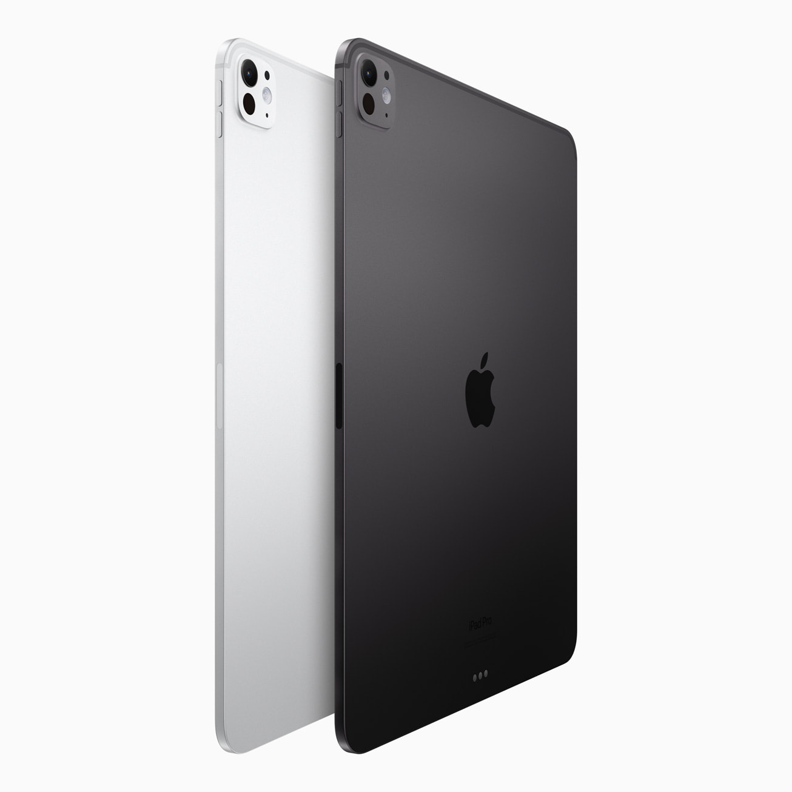

Apple introduces M4 chip
M4 enables the breakthrough design and stunning display of the new iPad Pro, while delivering a giant leap
in
performanc
CUPERTINO, CALIFORNIA Apple today announced M4, the latest chip delivering phenomenal performance to the all-new iPad Pro. Built using second-generation 3-nanometer technology, M4 is a system on a chip (SoC) that advances the industry-leading power efficiency of Apple silicon and enables the incredibly thin design of iPad Pro. It also features an entirely new display engine to drive the stunning precision, color, and brightness of the breakthrough Ultra Retina XDR display on iPad Pro. A new CPU has up to 10 cores, while the new 10-core GPU builds on the next-generation GPU architecture introduced in M3, and brings Dynamic Caching, hardware-accelerated ray tracing, and hardware-accelerated mesh shading to iPad for the first time. M4 has Apple’s fastest Neural Engine ever, capable of up to 38 trillion operations per second, which is faster than the neural processing unit of any AI PC today. Combined with faster memory bandwidth, along with next-generation machine learning (ML) accelerators in the CPU, and a high-performance GPU, M4 makes the new iPad Pro an outrageously powerful device for artificial intelligence. “The new iPad Pro with M4 is a great example of how building best-in-class custom silicon enables breakthrough products,” said Johny Srouji, Apple’s senior vice president of Hardware Technologies. “The power-efficient performance of M4, along with its new display engine, makes the thin design and game-changing display of iPad Pro possible, while fundamental improvements to the CPU, GPU, Neural Engine, and memory system make M4 extremely well suited for the latest applications leveraging AI. Altogether, this new chip makes iPad Pro the most powerful device of its kind.”
New Technologies Enabling the New iPad Pro
Delivering a giant leap in performance over the previous iPad Pro with M2, M4 consists of 28 billion transistors built using a second-generation 3-nanometer technology that further advances the power efficiency of Apple silicon. M4 also features an entirely new display engine designed with pioneering technologies, enabling the stunning precision, color accuracy, and brightness uniformity of the Ultra Retina XDR display, a state-of-the-art display created by combining the light of two OLED panels.
